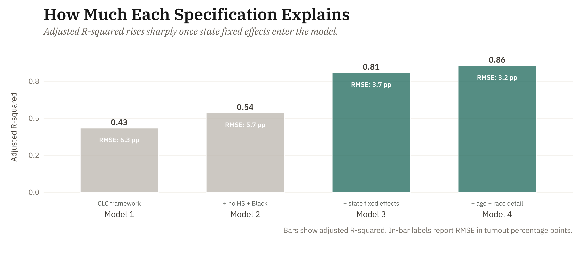

Methodology
This analysis uses Ordinary Least Squares (OLS) regression to model county-level voter turnout rates as a function of structural predictors from the American Community Survey. The unit of analysis is the county; the outcome variable is the county-level turnout rate calculated using CVAP denominators.
Instead of a single specification, the analysis builds up four nested models, each adding variables to the one prior. This progression shows how fit improves with each addition and confirms that Model 4 — which is most comprehensive — is the appropriate basis for case selection.

Adjusted R-squared and RMSE across the four nested specifications. Model 3 adds state fixed effects; Model 4 is the preferred specification used for case selection.
Model 1 — original CLC-derived structural predictors (5 variables):
\[\text{Turnout}_i = \beta_0 + \beta_1(\text{Bachelor's}_i) + \beta_2(\text{Internet}_i) + \beta_3(\text{LEP}_i) + \beta_4(\text{Disability}_i) + \beta_5(\text{Poverty}_i) + \varepsilon_i\]
Model 2 — adds lower-tail education and racial composition (7 variables): adds % no high school diploma and % Black or African American to Model 1.
Model 3 — adds state fixed effects: adds a categorical indicator for state, allowing the intercept to vary by state and absorbing state-level institutional context (registration rules, ballot access, election administration).
Model 4 — comprehensive specification: adds % Hispanic / Latino, % American Indian / Alaska Native, % age 18–24, and % age 65+ to Model 3. This is the preferred specification and drives case selection.
In each model, \(i\) indexes counties and \(\varepsilon_i\) is the performance gap — how far each county’s actual turnout falls from what its demographics predict — and is the quantity of primary analytic interest.
Why OLS? Here, the goal is not prediction accuracy but using residuals to inform case selection. OLS produces easily interpretable residuals — stark outliers are the strongest candidates for qualitative investigation.
Fit Statistics
The largest fit gain comes from adding state fixed effects (Model 2 → Model 3): adjusted R² rises from roughly 0.54 to 0.81, indicating that state-level context absorbs much of the unexplained variance. Adding age structure and additional race variables (Model 3 → Model 4) yields a further gain to roughly 0.86, certainly smaller but still meaningful. Together, this model progression shows why Model 4 is the preferred specification.
| Model | R² | Adj. R² | RMSE (pp) | N |
|---|---|---|---|---|
| Model 1: CLC framework (5 vars) | 0.440 | 0.434 | 6.32 | 437 |
| Model 2: + no HS + Black | 0.543 | 0.536 | 5.72 | 437 |
| Model 3: + state fixed effects | 0.813 | 0.808 | 3.68 | 437 |
| Model 4: full (age + Hispanic + AI/AN) | 0.860 | 0.855 | 3.19 | 437 |
Visual Summary — Model 4
Model 4 fit: R² = 0.86, Adjusted R² = 0.855, RMSE = 3.13 pp. The model accounts for approximately 86% of the variation in county-level turnout. Each point below represents one predictor; the horizontal bar shows how uncertain that estimate is.

Model 4 coefficient estimates and 95% confidence intervals. Effects are rescaled to percentage-point turnout change for a 10-point increase in each predictor; state fixed effects are estimated but not displayed.
Residual Distribution — Model 4
The distribution of performance gaps — how far each county’s actual turnout falls from its demographic prediction — shows whether the model systematically over- or under-predicts for any subset of counties. A well-calibrated model produces gaps that are approximately normally distributed around zero.
Distribution of Model 4 performance gaps (actual minus predicted turnout, pp). Click the legend to show case-study counties.
Coefficient Estimates — Model 4
| Predictor | Category | 10-pt Effect (pp) | p-value |
|---|---|---|---|
| % Bachelor’s Degree or Higher | Education & Access | 5.26 | <0.001 |
| % No High School Diploma | Education & Access | -6.64 | <0.001 |
| % Black or African American | Race, Ethnicity & Language | -2.12 | <0.001 |
| % Hispanic or Latino | Race, Ethnicity & Language | -0.15 | 0.790 |
| % American Indian / Alaska Native | Race, Ethnicity & Language | -2.05 | <0.001 |
| % Age 18-24 | Age Structure | -6.46 | <0.001 |
| % Age 65+ | Age Structure | 1.41 | 0.027 |
| % Households with Internet | Education & Access | -1.08 | 0.067 |
| % Limited English Proficiency | Race, Ethnicity & Language | -0.38 | 0.807 |
| % Population with a Disability | Economic & Health Context | 0.52 | 0.565 |
| % Below Poverty Line | Economic & Health Context | -3.41 | <0.001 |
| Note: | |||
| The 10-point effect column shows the expected change in county turnout rate for a 10-point increase in each predictor. For example, a −6.6 pp effect for % No High School Diploma means that counties with 10 percentage points more residents without a high school diploma tend to have turnout 6.6 points lower, holding all other predictors constant. |
Selected Counties: Full Statistics — Model 4
| County | State | Tier | Actual (%) | Predicted (%) | Residual (pp) | Rank (m4) |
|---|---|---|---|---|---|---|
| Jasper | Illinois | Over-Performer | 77.7 | 66.3 | 11.4 | 437 |
| Martin | Indiana | Over-Performer | 66.1 | 57.4 | 8.7 | 434 |
| Rock Island | Illinois | As-Expected | 61.1 | 61.0 | 0.1 | 214 |
| Rusk | Wisconsin | As-Expected | 73.6 | 73.6 | 0.1 | 212 |
| Lawrence | Illinois | Under-Performer | 50.9 | 57.5 | -6.6 | 7 |
| Gogebic | Michigan | Under-Performer | 70.3 | 79.7 | -9.4 | 3 |
The selection pairs one extreme + one moderate county in each tail (over- and under-performers) so the qualitative analysis can analyze beyond simply the most extreme outliers. The two as-expected counties, Rock Island (IL) and Clark (IN), have residuals near zero. This provides a clean baseline where Model 4 predicts the turnout almost exactly.
Limitations This model is cross-sectional and observational. As such, it is important to note that the coefficients should not be interpreted as causal effects.
- Background → Descriptive findings: state choropleths and demographic gap analysis
- Case Studies → Qualitative analysis of six selected counties
- Synthesis → Cross-case patterns and implications
- Explore → Interactive county-level data explorer